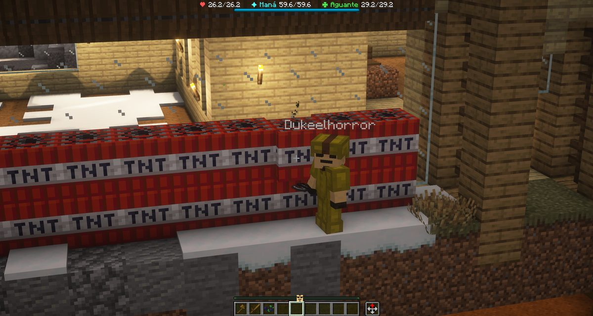

Boletín Oficial del Ayuntamiento del Reino · Se informa, no se alarma
EL HERALDO DEL REINO
Número 2111 de septiembre de 2026Tarde del viernes 11 de septiembre a la mañana del sábado 12
EL AYUNTAMIENTO LES PASA 300 CACAHUATES POR CASARSE: OCUPACIÓN DE VÍA PÚBLICA EN ACTO PRIVADO
GabbyQuill635 y Fiya___ se casaron esta madrugada en la iglesia del Reino, ante el Padre Elías y cinco asistentes: las dos de blanco, las dos con flores y sin novio por ninguna parte. El enlace se anunció a las 04.20 con dos palabras —«todos invitados»— y a esa hora había ocho vecinos dentro a la vez, la mayor concurrencia de toda la jornada. Doce horas después, el Negociado de Hacienda giró a las contrayentes la liquidación 21/1, por importe de 300 cacahuates, en concepto de ocupación de vía pública para acto privado: la alfombra del pasillo, el mantel puesto en la zona verde junto al Tablón, dos velas encendidas sin autorización de fuegos y unas flores plantadas en el perímetro del convite. Esta Oficina hace constar que este Ayuntamiento no tiene libro donde inscribir un matrimonio, pero sí tenía tarifa para cobrarlo, y que ha tardado doce horas en emitir el cargo cuando lleva diecinueve jornadas sin localizar a una empleada. Las contrayentes, de momento, no han contestado.
Redactado por la Oficina de Prensa del Ayuntamiento
♥ El Corazón del Reino ♥
EDICIÓN EXTRAORDINARIA DE BODA
Negociado de Vida Sentimental. Por una vez, esta sección no insinúa nada: lo de anoche consta, fue a las cuatro y veinte de la mañana y había fotógrafo. Lo que sigue son los hechos, en el orden en que ocurrieron, y el Ayuntamiento apartándose.
EL CORAZÓN DEL REINO
Una novia invisible
El retrato que aportó la propia contrayente: las dos manos, el sol al fondo y los brazos formando lo que forman. No es una fotografía del enlace; es el retrato encargado para anunciarlo.Archivo Municipal · pase el ratón para revelarla
Empecemos por donde de verdad empieza esto, que no es en la iglesia sino cincuenta
minutos antes. A las 03.32, GabbyQuill635 escribió en la plaza: «de hecho
estoy invisible». A las 03.55, ya en mayúsculas: «DUKE PLS QUÍTAME LA
INVISIBILIDAD».
Esta casa lo clasifica, como siempre, de fluctuación de presencia: rutinaria, sin
gravedad y con el mismo origen que la desalineación de contornos que traía a medio pueblo
de cabeza desde la noche anterior. Lo que no puede clasificar es lo otro: que la vecina,
sin que se la viera, se fue a la iglesia igual, se puso la corona de flores igual y
se casó igual, veinticinco minutos después.
El Ayuntamiento quiere dejar dicho que da fe de un enlace que no pudo ver, y que
no tiene intención de repetir la frase en voz alta.
EL CORAZÓN DEL REINO
El convite: mantel de cuadros, dos velas y una tarta, junto al Tablón
El convite, al aire libre y a la puesta de sol, a unos metros del Tablón de Faena. Mantel de cuadros rojos y blancos, cesta, dos velas encendidas, una tarta y flores plantadas alrededor. Cinco invitados y ni una silla.Archivo Municipal · pase el ratón para revelarla
No hubo salón. Hubo un mantel de cuadros puesto en la hierba a dos pasos del
Tablón de Faena, una cesta, dos velas encendidas, una tarta y flores plantadas
alrededor a mano. Esta Oficina ha visto banquetes oficiales con más presupuesto y menos
gente, y no piensa desarrollar la idea.
Asistieron cinco. Entre ellos, ItsMeiLing y TAL_Human, que se habían dado
de alta en el Reino a las 04.04 y a las 04.10 respectivamente —o sea, diez y dieciséis
minutos antes—, y Maxernova, que llegó a las 04.43 y se incorporó al convite ya
empezado. De los seis vecinos que se empadronaron en toda la jornada, cuatro lo hicieron
dentro de la misma hora, y esa hora es la de la boda.
Desde el grupo vecinal, Cafecito mandó lo único que hacía falta mandar:
«Felicidades ❤️».
EL CORAZÓN DEL REINO
Diecinueve minutos de matrimonio y una de las novias se ahoga
El registro de defunciones de la jornada, en la parte que aquí interesa, dice dos cosas
y esta Oficina las pone seguidas porque van seguidas:
02.31GabbyQuill635 se ahogó
04.39Fiya___ se ahogó
La primera, hora y media antes de la boda. La segunda, diecinueve minutos
después. Las dos contrayentes se ahogaron la misma noche, cada una por su cuenta y sin
testigos comunes, y las dos volvieron a la plaza como si nada.
El Negociado de Vida Sentimental ha estudiado el asunto y lo archiva en el epígrafe
«dos personas y una circunstancia del terreno», que es el epígrafe que se usa cuando
no hay ninguna circunstancia del terreno. Se recuerda además que el matrimonio, a efectos
de esta casa, no altera la profundidad del agua.
EL CORAZÓN DEL REINO
Y a las 04.59, dos invitados se mataron el uno al otro
Cuarenta minutos después del enlace, el registro anota lo siguiente:
04.59ItsMeiLing cayó a manos de Maxernova
05.00Maxernova cayó a manos de ItsMeiLing
Un minuto exacto entre una y otra. Los dos habían llegado al Reino esa misma
madrugada y los dos estaban en el convite. Esta corporación no ha recibido parte de
ninguno, no ha abierto expediente, no consta denuncia y no piensa promoverla de oficio:
se mataron entre ellos y quedaron en paz en sesenta segundos, que es un
procedimiento más rápido y más barato que todo lo que ha montado este Ayuntamiento en
veintiuna jornadas.
Se hace notar, eso sí, que son las dos primeras defunciones a manos de otro vecino
en tres jornadas, y que ocurrieron en una boda. La Encargada del Orden no estaba.
EL CORAZÓN DEL REINO
El resto de la vida sentimental del Reino, que tampoco descansó
Mientras en la iglesia pasaba lo que pasaba, en el tablón de estampas del vecindario
Arsar publicaba una imagen a las 04.52 con dos palabras: «Mis
novias». En plural.
A las 05.28, LetayReaver contestaba lo que contestó: «Grande, una
relación liberal». Esta Oficina no afirma nada, no tiene competencia en la materia y
se limita a hacer constar que la misma madrugada en que este Reino celebró su primer
matrimonio documentado se publicó también, y con foto, una declaración de plural.
El Negociado deja las dos cosas en la misma página porque están en el mismo
archivo y a la misma hora. La conclusión, como siempre, corre de cuenta del lector.
Oficina de Prensa · Negociado de Vida Sentimental
PORTADA
Una boda de madrugada, con alfombra morada y sin un solo papel
El interior de la iglesia a las 04.20. La alfombra morada se puso para la ocasión, los faroles estaban encendidos y el Padre Elías consta en el sitio. Las contrayentes, en el centro; los asistentes, alrededor, con el traje que cada cual tenía.Archivo Municipal · pase el ratón para revelarla
A las 04.20 de esta madrugada, GabbyQuill635 anunció en la plaza que se
estaba casando en la iglesia «en este momento» y que quedaban «todos
invitados». No hubo convocatoria previa, ni bando, ni cartel: hubo dos frases y una
alfombra morada puesta en el pasillo central.
La otra contrayente es Fiya___. Consta el Padre Elías en el lugar y
constan cinco asistentes: dos con traje oscuro, uno de azul, una con corona y uno
—esta Oficina lo describe como lo vio— con la cara de una calavera y chaqueta de
vestir. Una de las novias llevaba corona de flores y una rosa roja al
pecho; la otra, vestido claro con ribetes rosas. No hubo novio, y esta Oficina
lo hace constar por la misma razón por la que consta todo lo demás: porque es lo que
había.
A las 04.15, cinco minutos antes del anuncio, el Reino registró ocho vecinos
dentro a la vez: la mayor concurrencia de las veintidós horas que duró la jornada. No
se convocó a nadie y vino todo el mundo, que es la única forma de convocatoria que
funciona aquí.
Y ahora la parte administrativa. Este Ayuntamiento no tiene registro
civil: no hay libro de matrimonios, no hay impreso y no hay funcionario habilitado,
de modo que el enlace de anoche no se puede inscribir en ninguna parte. Lo que sí
había era tarifa. A las 16.32 de esta tarde, el Negociado de Hacienda giró a
las contrayentes la liquidación 21/1, de 300 cacahuates, por ocupación de vía
pública para acto privado, con su desglose línea por línea (§ el recuadro).
Esta Oficina se limita a poner las dos fechas una al lado de la otra, que es lo que
sabe hacer. Para inscribir la boda: no hay procedimiento, y el expediente de
creación del Registro se abre hoy. Para cobrarla: doce horas y veinte minutos desde
que se anunció. El matrimonio de GabbyQuill635 y Fiya___ consta, por tanto, en dos sitios:
en este periódico y en una liquidación.
ADMINISTRACIÓN
Seis minutos entre darse de alta y casarse: el expediente más rápido de la historia
El padrón de la jornada dice lo siguiente, y se transcribe entero porque es corto:
Fiya___, alta a las 04.14. El anuncio del enlace es de las 04.20.
Seis minutos. Para comparar: el Negociado de Urbanismo tarda dos jornadas en
devolver un plano por el mobiliario, esta casa lleva diecinueve sin localizar a
Fátima, y la Comisión de Estudio del Subsuelo Rentable lleva desde el 24 de agosto sin
reunirse porque no se ha constituido. Una vecina llegó al Reino, se empadronó y se casó
antes de que a esta corporación le diera tiempo a sellarle el alta.
Esta Oficina no ve en ello irregularidad alguna, entre otras cosas porque no hay
norma que incumplir. Hace constar únicamente, a efectos de futuras convocatorias, que
el trámite es perfectamente posible y que el problema nunca fue la velocidad del
vecindario.
HACIENDA
Liquidación 21/1: trescientos cacahuates por una alfombra, un mantel y dos velas
El Negociado de Hacienda ha girado a las contrayentes la liquidación 21/1, por
importe de 300 cacahuates, en concepto de ocupación de vía pública para la
celebración de un acto privado. Es el primer cargo que esta corporación emite por un
motivo sentimental y, hasta donde alcanza el archivo, el primero que se emite en menos
de un día.
El desglose va en el recuadro de al lado, y esta Oficina lo publica entero a propósito:
cada línea se corresponde con algo que se ve en las fotografías que aportaron los
propios vecinos. La alfombra morada del pasillo. El mantel de cuadros en la zona verde
junto al Tablón de Faena. Dos velas encendidas, que la ordenanza clasifica como
fuego en espacio abierto. Y unas flores plantadas a mano en el perímetro del
convite, que el Negociado de Parques considera plantación no autorizada y esta Oficina
considera, sin competencia ninguna para ello, bonitas.
Se hace constar, en descargo de las contrayentes, que a ninguna se le informó de que
existiera tarifa, entre otras cosas porque no existía hasta que hizo falta cobrarla; y
que el Ayuntamiento no aportó al acto ni la alfombra, ni el mantel, ni las velas, ni las
flores, ni el cura. Aportó el suelo.
La liquidación admite recurso. Este pueblo estrenó abogado defensor anteanoche,
en el expediente de los hornos, y esta casa hace notar —sin sugerir nada— que el
procedimiento ya está inventado, que se resolvió en dos horas y cincuenta y cinco minutos,
y que quien lo estrenó sigue empadronado aquí.
URBANISMO
Una vivienda reubicada cincuenta bloques con cuarenta y ocho cargas de obra

El Emperador, en el momento del traslado, delante del material de obra dispuesto en dos hileras contra la fachada. Consta que el procedimiento se anunció antes: «avisé».Archivo Municipal · pase el ratón para revelarla
El Ministerio de Construcciones informó a las 22.08 de que la vivienda fue
reubicada oficialmente, a unos cincuenta bloques enfrente de donde estaba, y aportó a
las 22.09 la imagen del traslado, en la que se aprecia al Emperador en persona
dirigiendo la operación desde delante de dos hileras de material de obra apoyadas contra
la fachada.
Esta Oficina destaca tres cosas del expediente. Una: que el traslado se ejecutó
el mismo día en que se anunció, lo que no tiene precedente. Dos: que hubo aviso
previo —consta en la plaza un «avisé» a las 21.51, y consta también, treinta
segundos antes, un vecino diciendo «calajos» y otro diciendo
«reubicación»—. Tres: que el procedimiento empleado es el que es, y
que esta casa no va a describirlo mejor de lo que lo describe la fotografía.
La vivienda, según el Ministerio, sigue en pie y ahora está cincuenta bloques más
allá. No consta parte de daños. No consta tampoco que se preguntara a nadie.
PADRÓN
Seis altas en una jornada, cuatro de ellas en treinta y nueve minutos
Se dieron de alta en el Reino seis vecinos: pinguinogamer293 (22.36),
ItsMeiLing (04.04), TAL_Human (04.10), Fiya___ (04.14),
Maxernova (04.43) y Stell4rShimmer (12.57). Es la cifra más alta de altas
de las veintiuna jornadas que lleva este periódico, y cuatro de las seis se tramitaron
en treinta y nueve minutos, de madrugada, coincidiendo con la boda.
No todo el mundo lo celebró igual. Por la mañana, LetayReaver preguntó al
Ministerio «dónde estabas para no dejarlos entrar como prometiste», y
Gaaraham03, más escueto, «¿y esa gente?». El Ministerio contestó a las
09.03 con una frase que esta Oficina reproduce sin comentario porque no le hace falta:
«Encontraron mi punto débil, entrar a las 5 de la mañana».
ANOMALÍAS
El mundo salió a cuadros violeta y negro, y duró toda la noche
Desalineación de contornos, tal y como se vio: las piezas del terreno reducidas a cuadros violeta y negro. La imagen la aportó una vecina a las 02.42, cuatro horas después del primer aviso.Archivo Municipal · pase el ratón para revelarla
La jornada arrancó con lo de siempre. A las 21.44 el Ministerio preguntaba en la
plaza si a alguien más le fallaban los contornos; a las 21.45 una vecina declaraba que
había entrado y «veía todos los bloques invisibles» pero lo había achacado a su
propia máquina; y a las 21.46 se acordó un cierre técnico por revisión del
pulso.
No bastó. A las 02.19, GabbyQuill635 resumía el estado del Reino con tres
palabras y tres signos de admiración. A las 03.13 lo concretaba de la única forma
en que se puede concretar esto: «es que yo veo los cacahuates como palos». A las
03.19 informaba de que el paquete de estampas del Reino no le llegaba entero,
y a las 03.32 ya estaba en fluctuación de presencia.
Esta corporación hace constar que la moneda del Reino se vio como un palo durante
horas y que nadie dejó de usarla ni un minuto, lo que a juicio de esta Oficina dice más
del crédito del cacahuate que cualquier informe que pudiera encargarse.
SUCESOS
Tres caídas en la mina, una puerta que no aparece y el Emperador tumbado en el osario
Gaaraham03 cayó tres veces en la jornada, las tres en la explotación
infectada y en cincuenta y dos minutos: dos consumido mientras peleaba con un Minero
Infectado (18.47 y 19.09) y una a manos de una Portadora de Esporas (18.49).
Llevaba desde media tarde buscando una puerta que, según declaró, «no encuentro»,
y a la que le aseguraron que estaba «abajo del todo, en la primera área». A las
19.27 seguía igual: «nada, y eso que ya maté a todos».
Esta Oficina lo tramita como defecto de la imprenta municipal —un plano que no
dice dónde está la puerta es un plano incompleto— y no como impericia del vecino, que
efectivamente mató a todos.
A las 21.57, el Emperador fue abatido por ☠ El Nigromante del Osario
☠. Se consigna por respeto al registro, que no distingue cargos.
SOCIEDAD
Llegó el invierno, y con él una declaración de guerra a los mosquitos
A las 08.33, LetayReaver lo anunció en la plaza con tres palabras:
«El invierno ha llegado», y añadió la recomendación que corresponde:
«no vayan más ahí de las murallas». El parte del cielo lo confirma: 18 de
diciembre del año 8, invierno, banda de -12 a 0 °C, y setenta y seis días
hasta la primavera.
Dos horas después, el mismo vecino abría frente único contra la plaga de
sancudos: «tocará erradicarlos a todos de raíz», y acto seguido,
«hora de iniciar una expedición a las afueras, para buscar su madriguera y destruir su
reina y colmena». Esta corporación toma conocimiento de la iniciativa, la agradece, y
recuerda que en su registro no consta ninguna reina, lo que no significa que no la
haya: significa que nadie ha ido a mirar.
En el capítulo de deudas, Gaaraham03 dejó dicho a las 08.35, y con
condicional incluido: «no, hasta que me devuelvas mis cacahuates». Esta casa no
media en asuntos de cuentas entre particulares. Los publica, que es peor.
EL PARTE DEL PULSO
Lo que se arregló mientras el pueblo se casaba
La llave de la Cantera, que se entregaba con las marcas del cajista a la vista y
prometiendo un zumbido que no existía, quedó corregida y así se le comunicó al vecino que
lo denunció. Los boquetes abiertos en el terreno tienen tapador: el Ministerio se
ofreció por escrito —«¿alguien tiene más hoyos que quiera que le tape?»— y esta
Oficina lo hace público por si alguien tiene uno y no se atreve a decirlo.
Sobre los contornos, el Ministerio preguntaba a las 07.56 si se había vuelto a
descolgar el paquete de estampas. La respuesta, a la vista de la noche, es que sí. Queda
abierto.
Y una ordenanza nueva, que entra en vigor sin debate porque no lo ha pedido
nadie: queda prohibido volar con el tridente mientras llueva. Quien lo intente
notará que el arma no tira y leerá un aviso. Con el cielo despejado, y dentro del agua,
todo sigue igual. Esta corporación no da explicaciones sobre el porqué; se limita a señalar
que llevamos setenta y seis días de invierno por delante.
Espacio cedido · Ministerio de Construcciones del Reino
LA GRAN EXCAVACIÓN
Este domingo. La Dra. Pizarrica abrirá varias zonas bajo el Reino para investigar lo que haya debajo. Se invita al vecindario a acudir con lo puesto y a cavar.
Qué es. Una excavación abierta, convocada por el Ministerio y dirigida por la
Dra. Pizarrica, que es la autoridad de esta casa en materia de piedra y la única que
ha pedido permiso para levantarla. Se abrirán varias zonas bajo el Reino.
Cuándo. El domingo. Y se hace constar el motivo, que lo explicó el propio
Ministerio y esta Oficina lo respeta: «el único día que puedo realizar los eventos son
algunos sábados y los domingos», por razones de trabajo. A un vecino que preguntó si
podía ser el lunes —le habían dado ese día de descanso— se le contestó que no, y se le
contestó en dos minutos, que es la mayor diligencia registrada en este Ayuntamiento.
Qué llevar. Lo que cada cual tenga. No hay inscripción, no hay tasa y no hay
impreso: lo mismo, exactamente, que hizo falta anoche para casarse.
El parte de la jornada
Duración de la jornada
21 h 21 min, de las 15:37 a las 12:58
Cuentas en el Reino
17 — 15 vecinos y 2 de esta administración
Máxima concurrencia
8 a la vez, a las 04:15
Minutos entre ese máximo y el anuncio de la boda
5
Matrimonios celebrados y documentados
1, y es el primero que consta
Importe girado a las contrayentes
300 cacahuates
Conceptos que incluye la liquidación
6, y los 6 se ven en las fotografías
Partida por inscribir el matrimonio
0: no hay dónde inscribirlo
Partida por tramitar el expediente que lo cobra
20
Horas que tardó el cargo desde que se anunció la boda
12 h 12 min
Jornadas que lleva esta casa buscando a Fátima
19
Cosas que aportó el Ayuntamiento al enlace
el suelo
Registros civiles que tiene este Ayuntamiento
0
Libros donde queda inscrito el enlace
1, y es este periódico
Minutos entre el alta de una contrayente y su boda
6
Minutos que llevaba la otra sin que se la viera
48
Asistentes que constan en la iglesia
5, más el Padre Elías
Alfombras puestas para la ocasión
1, morada
Velas encendidas en el convite
2
Sillas en el convite
0
Altas tramitadas
6, la cifra más alta en 21 jornadas
De ellas, en 39 minutos seguidos
4
Defunciones
8
Vecino con más defunciones
Gaaraham03, 3
De ellas, en 52 minutos
3
Defunciones de las contrayentes, la noche de su boda
2, una cada una
Minutos que duró el matrimonio antes del primer ahogamiento
19
Defunciones a manos de otro vecino
2, y las dos en la misma boda
Minutos entre una y la otra
1
Denuncias presentadas por ello
0
Horas que el Reino se vio a cuadros violeta y negro
más de 10
Cierres técnicos por revisión del pulso
1, y no bastó
Vecinos que dejaron de usar la moneda por verla como un palo
0
Viviendas reubicadas
1, cincuenta bloques
Avisos previos dados por el Ministerio
1, y consta por escrito
Partes de daños
0
Expediciones anunciadas contra la reina de los mosquitos
1
Reinas de mosquito que constan en el archivo
0
Días de invierno por delante
76
Ordenanzas nuevas
1: no se vuela con el tridente si llueve
Puertas que un plano municipal no sabía localizar
1
Criaturas que el vecino mató buscándola
todas
Jornadas de Fátima sin acudir a su puesto
19
Lagomorfos avistados
0, por decimonovena jornada
Reuniones de la Comisión del Subsuelo Rentable
0
Aviso oficial
Sobre el matrimonio celebrado esta madrugada y la liquidación girada esta tarde,
este Ayuntamiento hace público lo siguiente. Primero, que felicita de corazón a
GabbyQuill635 y a Fiya___, y que la felicitación no va incluida en los 300
cacahuates: la felicitación es gratis y la emite esta Oficina por su cuenta.
Segundo, que reconoce, porque está por escrito y lo firma quien lo firma, lo
siguiente: este Reino no tiene registro civil —ni libro de matrimonios, ni impreso, ni
funcionario habilitado— y sí tiene tarifa de ocupación de vía pública. O sea que esta
corporación no ha sabido inscribir la boda y ha sabido cobrarla, y ha tardado
doce horas en lo segundo. Hay una iglesia levantada por el vecindario, un cura que estaba allí
a las cuatro y veinte de la mañana y dos vecinas que no esperaron a que esta casa resolviera
nada. Hicieron bien. Llevamos diecinueve jornadas sin localizar a una empleada,
dieciséis sin juzgar a nadie y cero reuniones de una comisión que creó este Ayuntamiento: si
hubieran pedido permiso, seguirían solteras.
Tercero, y es lo que esta Oficina quiere dejar dicho por encima de todo lo demás.
Anoche, en este Reino, el mundo se veía a cuadros, la moneda parecía un palo, una de las
contrayentes no se veía, seis personas se empadronaron de madrugada, dos invitados se
mataron entre ellos en un minuto y una de las novias se ahogó diecinueve minutos después de
casarse. Y
aun así hubo alfombra, hubo corona de flores, hubo velas y hubo tarta, y a las 04.15
estaba dentro todo el pueblo a la vez, que es algo que esta corporación no ha
conseguido nunca con un bando.
Cuarto. Queda abierto, desde hoy y hasta que alguien lo cierre, el expediente de
creación de un Registro Civil del Reino. Esta Oficina calcula que estará listo para la
segunda boda. También calculaba que el juzgado estaría listo para el segundo juicio.
Y quinto, sobre los 300 cacahuates. La liquidación admite recurso, el plazo
es el que se quiera y la ventanilla es la misma que no tiene libro de matrimonios. Esta casa
no aconseja a nadie sobre lo que debe hacer con un cargo suyo; se limita a recordar que
anteanoche, en este mismo pueblo, un vecino recurrió una sanción por escrito, pidió abogado,
lo tuvo, y a las seis horas la autoridad que le había multado escribió «puede ser un error
de mi parte». Se puede. Y si nadie lo recurre, esta Oficina hace constar desde ya
que el primer ingreso por amor de la historia del Reino financiará, muy probablemente, otro
estudio sobre el subsuelo.